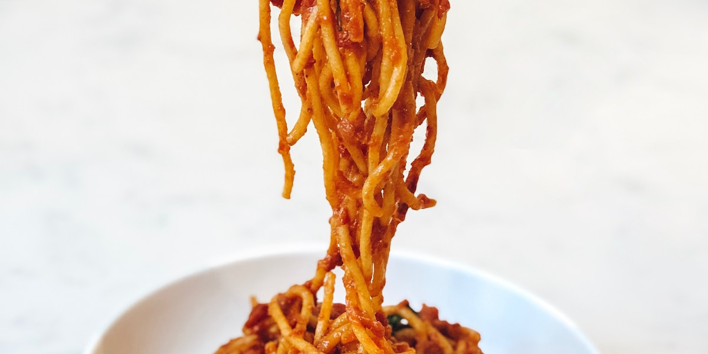

Corydon Avenue Restaurants: Where to Eat, Drink and Walk in Winnipeg's Little Italy

Corydon Avenue is Winnipeg's Little Italy: the stretch from Osborne Street west to Cambridge Street, where Italian dining rooms sit next to Georgian, Chinese and Japanese kitchens, gelato counters and patios. The short answer for a first visit is dinner at Passero (774 Corydon) or Saperavi (709 Corydon), a drink at Bar Italia (737 Corydon), and pizza at Tommy's (842 Corydon) or Santa Lucia (905 Corydon) on a casual night. Below is every restaurant we list with its address, then quick answers for patios, breakfast, gelato, bars, pizza and shops. From our three-bedroom house in Crescentwood, Corydon at Stafford Street is about a ten-minute walk (700 m) south.
Corydon restaurants, east to west
Addresses climb as you walk west from Osborne, so this list doubles as a route, with Stafford Street around the 900 block.
- Sunshine Chinese Restaurant, 635 Corydon Ave: an evening-only Chinese dining room that stays open late.
- The Roost, 651 Corydon Ave: a cocktail bar in an old house with a patio one floor above the street.
- Sushi Ya, 659 Corydon Ave: a small sushi and teriyaki spot that also does pickup.
- Colosseo Ristorante Italiano, 670 Corydon Ave: traditional Italian, on Corydon since 1973.
- Saffron's Restaurant, 681 Corydon Ave: Mediterranean plates, pizza and pasta, with a large patio that fills up on summer nights.
- Saperavi Georgian Cuisine, 709 Corydon Ave: khachapuri, khinkali and Georgian wine; the menu suits a group that wants to share.
- Bar Italia, 737 Corydon Ave: the long-running tavern on the busiest block, with a streetside patio.
- Thom Bargen Coffee Roasters, 743 Corydon Ave: coffee and pastries from a Winnipeg roaster.
- Passero Restaurant, 774 Corydon Ave: Italian-leaning shared plates from chef Scott Bagshaw, who moved the restaurant here from The Forks. Book ahead.
- Cafe 22, 823 Corydon Ave: a pizza and pasta room open late.
- The Cheesemongers Fromagerie, 839 Corydon Ave: a cheese shop, open Tuesday to Saturday, for picnic or house supplies.
- Peking Chinese Food Ltd., 840 Corydon Ave: a Chinese restaurant that has been on the street for more than fifty years.
- Tommy's Pizzeria, 842 Corydon Ave: Detroit-style and thin-crust pizza, with a patio.
- Forgotten Flavours, 858 Corydon Ave: a sourdough bakery's Winnipeg shop; the baking is done in Niverville.
- Wako Sushi Café, 875 Corydon Ave: inexpensive sushi, with pickup and delivery.
- Sugar + Salt Bakeshoppe, 897 Corydon Ave: custom cakes, cupcakes and doughnuts.
- Santa Lucia Pizza, 905 Corydon Ave: a Winnipeg pizza chain whose Corydon branch has a dining room.
- Starbucks, 946 Corydon Ave, at Stafford Street.
- Tim Hortons, 949 Corydon Ave, across the street.
Patios on Corydon
For a view over the street, go up: The Roost's patio is a floor above Corydon, and Confusion Corner Drinks + Food (500 Corydon Ave, right at the Osborne end) has a second-storey patio under a retractable awning. At street level, Bar Italia is the people-watching table and Saffron's is the bigger, quieter garden patio. Our guide to the best patios on Corydon goes through each one.
In summer 2026 the Open Corydon program closed the avenue to cars between Daly and Lilac streets on Sundays from July 5 to September 6, 10 a.m. to 8 p.m., so restaurants could extend their patios into the street.
Breakfast and coffee on Corydon
Corydon is a dinner street more than a brunch street. In the morning, Thom Bargen (743) is the coffee stop, Forgotten Flavours (858) has bread and pastry, and Starbucks and Tim Hortons sit facing each other at Stafford. For a sit-down breakfast a short walk off the avenue, see breakfast and brunch near Corydon.
Gelato and dessert
Nucci's Gelati, at 643 Corydon near the Osborne end, is the street's classic gelato counter; expect a line on hot summer nights. Sugar + Salt (897) covers cake and doughnuts. Our Corydon dessert crawl adds Eva's Gelato & Coffee Bar further west and puts them in order.
Bars on Corydon
Three to know. Bar Italia (737) is the casual neighbourhood bar, with its patio on the busiest block. The Roost (651) is for cocktails. Confusion Corner Drinks + Food (500) has the rooftop. For food after a drink, Cafe 22 keeps late hours.
Pizza on Corydon
Tommy's Pizzeria (842) is the pick for Detroit-style square pies; its owner, Thomas Schneider, has competed at the Pizza World Championship in Parma. Santa Lucia (905) is the dependable Winnipeg-style pizza with a dining room, and Cafe 22 (823) is the late-night option.
Shops, and walking Little Italy
The Cheesemongers (839) is the food shop to know, for cheese to take back to wherever you are staying. For a route that strings coffee, browsing, lunch and gelato into one afternoon, follow our half-day walking loop of Little Italy. For a dinner-first evening, see date night on Corydon Avenue.
Before you go: Corydon hours shift with the season, and several kitchens close on Mondays. Check the restaurant's own site or call before you walk over, and reserve at Passero and Saperavi for weekend dinners.